| 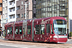 | 1000形 |
Green Mover Lex 1001 🚃 🚃 🚃 🚃 🚃 1002 🚃 🚃 🚃 🚃 1003 1006 🚃 🚃 1007 🚃 🚃 1008 🚃 🚃 |
| 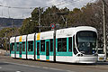 | 5100形 |
Green Mover Max 5101 5102 🚃 5103 🚃 🚃 5104 🚃 🚃 🚃 5105 🚃 5106 🚃 🚃 5107 5108 🚃 🚃 🚃 5109 🚃 5110 🚃 |
| 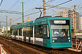 | 5000形 |
Green Mover 5001 🚃 🚃 5002 5003 🚃 5004 🚃 5005 5006 🚃 🚃 🚃 5007 5008 🚃 🚃 5009 5010 5011 🚃 5012 🚃 🚃 🚃 5013 🚃 |
| 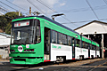 | 3950形 |
Green Liner 3951 🚃 3952 🚃 3953 🚃 3954 🚃 3955 3956 🚃 🚃 |
| 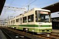 | 3900形 |
ぐりーんらいなー 3901 3902 🚃 3903 🚃 🚃 3904 3905 🚃 3906 🚃 🚃 🚃 3907 🚃 🚃 3908 |
| 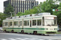 | 3800形 |
ぐりーんらいなー 3801 3802 🚃 🚃 3803 🚃 🚃 🚃 3804 🚃 3805 🚃 3806 🚃 🚃 🚃 🚃 3807 🚃 🚃 🚃 3808 3809 |
| 3700形 |
ぐりーんらいなー 3701 🚃 🚃 3702 🚃 3703 🚃 🚃 3704 🚃 🚃 🚃 3705 🚃 |
|
| 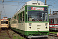 | 3500形 |
ぐりーんらいなー 3501 |
| 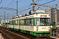 | 3100形 |
ぐりーんらいなー 3101 3102 3103 |
| 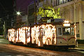 | 3000形 |
福岡市電 3002 🚃 3003 3004 🚃 🚃 3005 3006 3007 3008 🚃 |
| 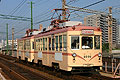 | 2000形 |
2002・2003 2004・2005 2006・2007 2008・2009 |
| 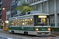 | 800形 |
801 🚃 🚃 802 803 🚃 🚃 🚃 804 🚃 🚃 🚃 805 🚃 🚃 🚃 806 🚃 🚃 🚃 🚃 807 🚃 808 🚃 🚃 🚃 809 🚃 🚃 🚃 810 🚃 🚃 🚃 811 🚃 812 🚃 813 🚃 🚃 814 🚃 🚃 |
| 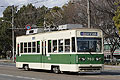 | 700形 |
701 🚃 🚃 🚃 702 703 🚃 🚃 704 🚃 🚃 705 🚃 🚃 🚃 706 🚃 🚃 🚃 707 711 🚃 🚃 🚃 712 🚃 🚃 🚃 713 🚃 🚃 🚃 🚃 714 🚃 🚃 🚃 |
| 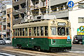 | 1900形 |
京都市電 1901 1902 1903 1904 1905 🚃 1906 1907 1908 🚃 🚃 1909 🚃 1910 🚃 🚃 1911 1912 1913 🚃 🚃 🚃 1914 🚃 1915 🚃 🚃 |
| 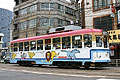 | 1150形 |
神戸市電 1156 🚃 |
| 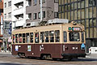 | 900形 |
大阪市電 904 🚃 905 🚃 906 🚃 🚃 🚃 🚃 🚃 🚃 907 🚃 910 🚃 🚃 911 912 🚃 913 🚃 🚃 🚃 🚃 914 🚃 🚃 |
| 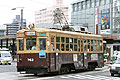 | 750形 |
大阪市電 761 762 🚃 763 768 769 772 |
| 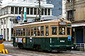 | 650形 |
被爆電車 651 🤯 652 🤯 653 654 |
| 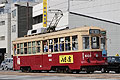 | 600形 |
北九州市電 602 |
| 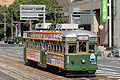 | 570形 |
神戸市電 582 🚃 |
| 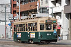 | 550形 |
553 554 |
| 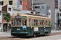 | 350形 |
351 🚃 🚃 352 🚃 🚃 🚃 353 🚃 🚃 |
| 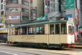 | 200形 |
ハノーバー市電 238 |
| 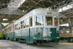 | 150形 |
被爆電車 156 🚃 |
| 100形 |
大正電車 101 🚃 |
|
| 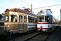 | 70形 |
ドルトムント市電 76 |
| 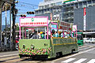 | 50形 |
貨51 貨52 |